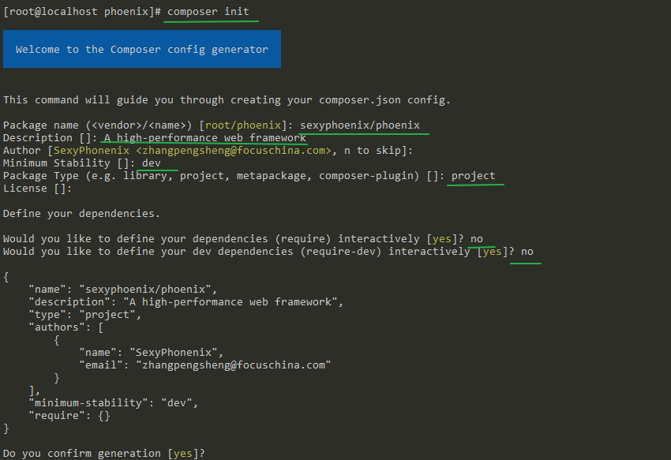
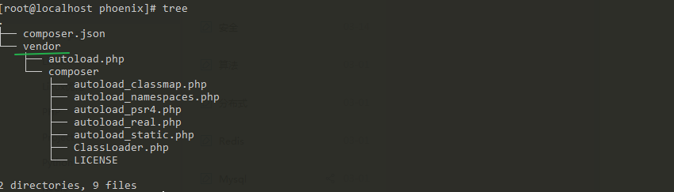
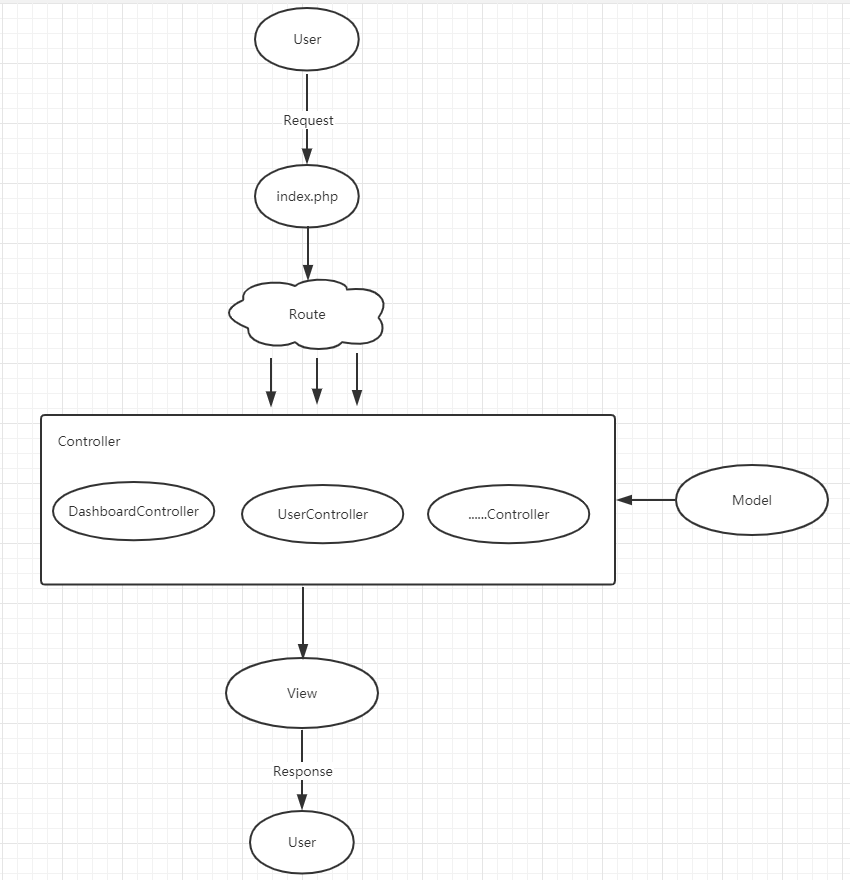
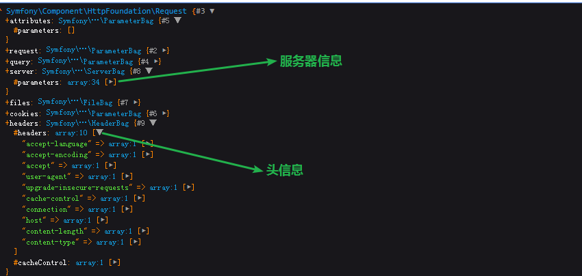
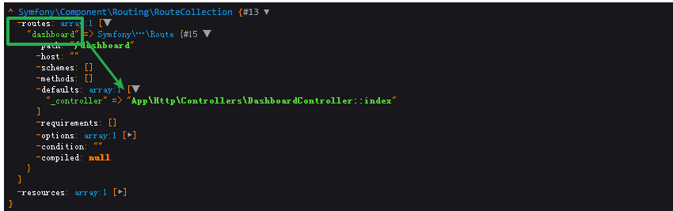
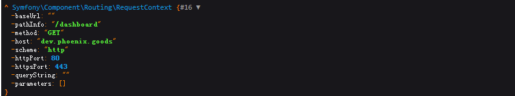
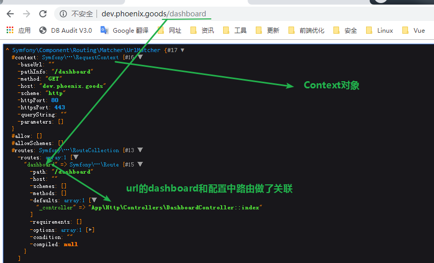
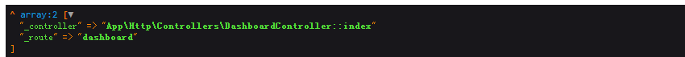
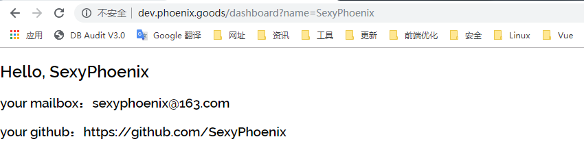

一次无意的访问，点击到了一个专门做PHP性能测试的网站，看这里PHP Benchmarks。
在里面发现了框架性能测试的结果，发现Laravel的框架性能尽然是最低的。瞬间受到了一万点的暴击，谁让最近一直用Laravel开发项目的呢。
说到底还是Laravel好用呀，方便不说，各方面支持的也不错，业务方面做的也是内部系统，哪怕性能慢点，也可以用前后端分离、负载均衡等手段解决掉，大体上也是够用。
不过，作为一个开发人员，理想还是要有的，这时就在想能不能采取Laravel框架的优点，用到什么就装什么，去掉一些请求到响应之间用不到的组件，精简框架。
之前也熟读过Laravel的源码，知道它的底层用的是Symfony的组件，毕竟没必要重复的造轮子。那么我们的框架之旅也将基于Symfony组件。。。
一、Composer运行机制
二、框架前期准备
三、HttpFoundation组件封装Request、Response
四、路由处理
五、控制器处理相应功能（C）
六、分离模板（V）
七、分离模型（M）
八、剥离核心代码
九、优化框架
十、依赖注入（Dependency Injection）
Composer的使用最关键的得益于PHP标准规范的出现，特别是其中的psr4，自动加载规范，规范了如何指定文件路径从而自动加载类定义，以及自动加载文件的位置。
既然讲到php文件的加载，我们就要聊一聊PHP的加载机制了。
在早前时，加载文件用的都是include、require，但这种加载有很大的局限性，相信同学们都知道，无论用到用不到都要加载大量的文件，相当繁琐。
于是就出现了autoload加载机制，它可以实现懒加载。
function __autoload($class)
{
require_once ($class.".php");
}当程序引用了未加载的类，就会自动调用__autoload方法，只要维护了__autoload方法，就可以懒加载文件。
但这里有一个很大的问题，就是程序中只能定义一次__autoload，这就需要花大尽力在__autoload中维护文件和空间的对应关系，特别是在大型项目，多人合作中更是繁琐。
而解决这个问题就是SPL Autoload。
SPL Autoload：__autoload调用堆栈。
怎么理解这个堆栈呢，举个例子。
现有的框架比如ThinkPHP、Laravel等都有一个vendor目录，用于存放第三方库，现在vendor下有两个库。
monolog 处理系统日志
guzzlehttp 处理HTTP
当程序引用这两个库的命名空间，并调用monolog、guzzlehttp下面的类时，发现调用的类文件都能被找到。
这主要原理是monolog、guzzlehttp都自定义了类似autoload的方法，然后用spl_autoload_register将方法注册到了SPL堆栈中。
这样的话，当程序调用类的时候，就会统一到SPL堆栈中寻找注册到堆栈中的autoload方法，并加载相应的文件。
以上就是php加载文件的方式，下面就用实战谈一谈composer的运行机制。
创建composer项目
# mkdir phoenix
# cd phoenix
composer initphoenix是接下来搭建的框架名。

创建成功后，发现当前文件夹下会生成一个composer.json文件，里面是刚写入的内容。
composer dump
tree后，就会发现多了一个vendor的目录，里面的autoload.php以及composer文件夹下文件就是整个框架的加载核心。
接下来看一遍这些文件。
在整个框架中，第一行必然要引用 vendor/autoload.php 文件，毕竟这是加载核心，那么就从autoload.php看起。
# autoload.php
require_once __DIR__ . '/composer/autoload_real.php';
return ComposerAutoloaderInit599fa618dd1395bdde5fc3a08ff3e4e6::getLoader(); 只调用了autoload_real.php里面的getLoader()方法。
#autoload_real.php 精简后的代码
public static function loadClassLoader($class)
{
if ('Composer\Autoload\ClassLoader' === $class) {
require __DIR__ . '/ClassLoader.php';
}
}
public static function getLoader()
{
#创建ClassLoader类
spl_autoload_register(array('ComposerAutoloaderInit599fa618dd1395bdde5fc3a08ff3e4e6', 'loadClassLoader'), true, true);
#初始化ClassLoader对象（主要就是将命名空间和文件的映射写入ClassLoader的属性中）
self::$loader = $loader = new \Composer\Autoload\ClassLoader();
spl_autoload_unregister(array('ComposerAutoloaderInit599fa618dd1395bdde5fc3a08ff3e4e6', 'loadClassLoader'));
#loadClass方法（类似autoload方法）注册到 SPL Autoload
$loader->register(true);
}autoload_real.php 的作用就是引入ClassLoader类、初始化ClassLoader类，并注册到SPL堆栈中。
ClassLoader类中有很多属性，这些属性的作用也很简单：主要就是方便后面程序快速的通过命名空间找到它所映射的类文件。
具体用到这些属性的方法就在ClassLoader类中。
# ClassLoader.php
# 一个快速找到文件的算法，很有意思，感兴趣的可以研究下
# 主要通过首字符找到命名空间以及长度，再根据命名空间以及长度找到文件
private function findFileWithExtension($class, $ext)
{
......
}那么ClassLoader类属性里面的值是什么时候写入的呢？
答案很简单：当为项目安装组件时，即composer require xxx时，会更新ClassLoader类的属性值，也就是将命名空间和文件地址做一个关联。
接下来看看它的register方法。
# ClassLoader.php
public function register($prepend = false)
{
spl_autoload_register(array($this, 'loadClass'), true, $prepend);
}看，其实很简单，就是将loadClass注册到SPL堆栈中。
那么现在就很清楚了，当程序使用了一个还未加载的类时，会调用什么方法？
当然是loadClass方法，再来看看loadClass方法。
# ClassLoader.php
public function loadClass($class)
{
if ($file = $this->findFile($class)) {
includeFile($file);
return true;
}
}根据方法的名称就能看出它的功能：1、找到文件 2、加载文件。
总结一下Composer的运行机制：
1、在composer require安装时，更新ClassLoader类的属性 。
2、运行对象时（new \Test()），如果未加载就会执行loadClass()，通过首字符找到命名空间以及长度，再根据命名空间以及长度找到文件，最后include文件。
以上就是Composer的运行机制，接下来，就进入真正的框架搭建了。
在正式进入搭建框架之前，先看下整体的架构图以及一些前期准备。

整个架构跟Laravel、ThinkPHP等框架是差不多的，一次请求，一次返回，一个入口，中间根据路由规则交给相应的控制器去执行，在控制器中处理数据以及视图。
接下来做一些前期准备，进入phoenix项目。
# vi index.php 一个入口
ini_set('display_errors', 1); # 显示错误
error_reporting(-1);
require_once __DIR__.'/vendor/autoload.php'; # 引入核心加载类
$name = $_GET['name'];
dump($name);# dump()
composer require symfony/var-dumper # 类似var_dump，输出的变量体验更好些。配置Nginx，访问域名为：http://dev.phoenix.goods/?name=SexyPhoenix， 可以正常显示SexyPhoenix。
现有的程序只是一个面向过程的代码，一个简单的请求，响应。
对于搭建web框架，这种痛苦写法当然是要被舍弃的，OOP编程才是正路。
既然要面向对象编程，首先要做的就是对流程中的Request、Response进行封装。而Symfony中专门的组件。
composer require symfony/http-foundation改造代码
# index.php
ini_set('display_errors', 1);
error_reporting(-1);
require_once __DIR__.'/vendor/autoload.php';
use Symfony\Component\HttpFoundation\Request;
use Symfony\Component\HttpFoundation\Response;
$request = Request::createFromGlobals(); # 创建request对象
$name = $request->get('name', 'World'); # 获取参数，可移入控制器或从模型得到数据
$response = new Response();
$response->setContent('<b>Hello '.$name.'</b>'); # 设置内容，可用view处理
$response->send(); # 返回下面来做一个简单的分析。
$request = Request::createFromGlobals();这一行代码，是相当重要的，它从对象层面上处理了php的全局变量，例如 GET，POST，SESSION......。

这样处理就可以轻易的从request对象中获取所需要的信息以及对请求头等信息的修改。
后期路由这些附加的信息也是存在request的attributes属性中，及其好用。
$response = new Response();通过response对象，可以轻易的控制返回的信息。比如头信息的各种缓存策略......
从架构图上看，接着就要处理路由了。
phoneix框架用了普遍的做法，统一index.php入口。
那么下面要做的就是如何将路由的附加参数和要处理的控制器进行映射。
对于路由一般框架都是通过配置来的，这里也一样做成可配置，方便。
Yaml格式配置路由
在phoenix项目下，创建routes文件夹，在routes下继续创建web.yaml文件。
dashboard:
path: /dashboard
defaults: {
_controller: 'App\Http\Controllers\DashboardController::index'
}下载symfony的Config组件、Yaml组件、Routing组件。
composer require symfony/config
composer require symfony/yaml
composer require symfony/routing更新代码
# index.php
ini_set('display_errors', 1);
error_reporting(-1);
require_once __DIR__.'/vendor/autoload.php';
use Symfony\Component\HttpFoundation\Request;
use Symfony\Component\HttpFoundation\Response;
use Symfony\Component\Routing\Loader\YamlFileLoader; # add
use Symfony\Component\Config\FileLocator; # add
$request = Request::createFromGlobals();
$fileLoader = new YamlFileLoader(new FileLocator(array(__DIR__))); # add
$collection = $fileLoader->load('routes/web.yaml'); # add
$name = $request->get('name', 'World');
$response = new Response();
$response->setContent('<b>Hello '.$name.'</b>');
$response->send();dump($collection)，可以看到返回了路由的Collection对象，里面有定义的路由。

这个时候，框架只是得到了定义的路由，但还没有和URL做映射，下面改造继续。
URL和配置路由映射
ini_set('display_errors', 1);
error_reporting(-1);
require_once __DIR__.'/vendor/autoload.php';
use Symfony\Component\HttpFoundation\Request;
use Symfony\Component\HttpFoundation\Response;
use Symfony\Component\Routing\Loader\YamlFileLoader;
use Symfony\Component\Config\FileLocator;
use Symfony\Component\Routing\RequestContext; # add
use Symfony\Component\Routing\Matcher\UrlMatcher; # add
$request = Request::createFromGlobals();
$fileLoader = new YamlFileLoader(new FileLocator(array(__DIR__)));
$collection = $fileLoader->load('routes/web.yaml');
#解析url
$context = new RequestContext(); # add
$context->fromRequest($request); # add
#初始化UrlMatcher
$matcher = new UrlMatcher($collection, $context); # add
#url和路由配置映射
$route = $matcher->match($request->getPathInfo()) # add
$name = $request->get('name', 'World');
$response = new Response();
$response->setContent('<b>Hello '.$name.'</b>');
$response->send();继续分析。
$context = new RequestContext();
$context->fromRequest($request);context对象主要就是对url进行解析。现在的域名：http://dev.phoenix.goods/dashboard

既然解析出url的参数，就要用解析出的参数和配置中的路由做精准关联了，初始化matcher，传入路由配置和url对象。

得到url和配置中的路由的映射。
$route = $matcher->match($request->getPathInfo());
在路由处理中，框架已经得到了路由和控制器的关联关系。下面就要执行相应的控制器（上面的_controller值）。
首先，在phoenix项目下，创建app/Http/Controllers/DashboardController.php（仿造Laravel的目录结构）。
# DashboardController.php
namespace App\Http\Controllers; # 注意这里App命名空间，自己定义，并没有注册到autoload
class DashboardController{
public function index()
{
echo 'Hello SexyPhoenix';
}
}App命名空间是框架定义的，需要注册后，才能用，打开项目的composer.json文件。
# composer.json
"autoload": {
"psr-4": {
"App\\": "app/"
}
}composer dump-autoload # 更新命名空间到这里，控制器的准备工作就做完了，接下来的问题就是如果利用得到的路由和控制器的映射关系去执行控制器，也就是下面的代码。
App\Http\Controllers\DashboardController::index其实也很简单，就是用"::"分隔，得到两个值，一个是类名，一个是方法名，再用php的call_user_func去执行。
但自己去写可能过去粗暴，可用性低，在执行前，要先判断DashboardController类是否存在，index方法是否存在，index方法的权限，是否是公共方法，以及各种参数等等，
自己去写的话，会很麻烦，为了方便，继续用symfony的组件。
composer require symfony/http-kernelhttp-kernel组件，是框架的内核，很重要的组件，它提供了各种钩子，及其方便框架扩展，也提供了控制器及其参数的“解析器”（这里需要了解下php的反射机制）。
更新index.php代码。
# index.php
......
use Symfony\Component\HttpKernel\Controller\ControllerResolver; # add
use Symfony\Component\HttpKernel\Controller\ArgumentResolver; # add
......
$route = $matcher->match($request->getPathInfo());
$request->attributes->add($route); # add 将路由映射关系写入request对象的附加属性中。
$controller = (new ControllerResolver())->getController($request); # add 处理控制器
$arguments = (new ArgumentResolver())->getArguments($request, $controller); # add 处理方法的参数
$response = call_user_func_array($controller, $arguments);
$response->send();更新DashboardController.php代码。
namespace App\Http\Controllers;
use Symfony\Component\HttpFoundation\Request; # add
use Symfony\Component\HttpFoundation\Response;# add
class DashboardController{
public function index(Request $request)
{
$name = $request->get('name', 'world'); # add
return new Response('Hello '.$name); # add
}
}用http-kernel好处就是可以处理各种问题，比如Request作为参数注入。
访问 http://dev.phoenix.goods/dashboard?name=SexyPhoenix， 得到 Hello SexyPhoenix。
现在的框架只是简单的输出字符串，在正式环境中当然不可能这么简单，要能够返回正常的HTML页面。
而复杂的HTML也不能放在控制器中处理，需要分离出来，单独处理。Symfony为框架同样提供了相关的组件。
composer require symfony/templating处理框架的目录结构。
在phoenix项目下，创建resources/views文件夹，继续在views下创建dashboard.php文件。
# dashboard.php
<!DOCTYPE html>
<html lang="en">
<head>
<meta charset="utf-8">
<meta http-equiv="X-UA-Compatible" content="IE=edge">
<meta name="viewport" content="width=device-width, initial-scale=1">
<title>Phoenix</title>
<style>
html, body {
color: #000;
font-family: 'Raleway', sans-serif;
font-weight: 100;
height: 100vh;
margin: 0;
}
</style>
</head>
<body>
<div>
<h2>Hello, <b><?php echo $name?></b></h2>
<h3>your mailbox：<?php echo $email?></h3>
<h3>your github：<?php echo $github?></h3>
</div>
</body>
</html>在app/Http/Controllers下创建Controller.php文件。
# Controller.php
namespace App\Http\Controllers;
use Symfony\Component\HttpFoundation\Response;
use Symfony\Component\Templating\PhpEngine;
use Symfony\Component\Templating\TemplateNameParser;
use Symfony\Component\Templating\Loader\FilesystemLoader;
class Controller {
/**
* $templete 模板文件
* $data 数据
*/
public function render($templete, array $data)
{
return new Response(
(new PhpEngine(
new TemplateNameParser(),
new FilesystemLoader(getcwd().'/resources/views/%name%')
))
->render($templete, $data)
);
}
}改造DashboardController.php 代码。
namespace App\Http\Controllers;
use Symfony\Component\HttpFoundation\Request;
class DashboardController extends Controller{ # 继承Controller
public function index(Request $request)
{
$name = $request->get('name', 'world');
$data = [
'name' => $name,
'email' => 'sexyphoenix@163.com',
'github' => 'https://github.com/SexyPhoenix'
];
return $this->render('dashboard.php', $data);
}
}访问 http://dev.phoenix.goods/dashboard?name=SexyPhoenix， 页面正常显示。

分离完模板后，架构的数据还是在控制器中处理，同样要做分离。不过这一步，同学们可以根据自己的意愿来，比如你可以添加仓库层、服务层等。
这里就做简单点，在app目录下，创建Models文件夹，继续创建User.php文件。
# User.php
namespace App\Models;
class User {
protected $emails = [];
protected $githubs = [];
public function getEmailByName(string $name)
{
$this->setEmails();
return array_key_exists($name, $this->emails) ? $this->emails[$name] : '';
}
public function getGithubByName($name)
{
$this->setGithubs();
return array_key_exists($name, $this->githubs) ? $this->githubs[$name] : '';
}
public function setEmails()
{
$this->emails = [
'SexyPhoenix' => 'sexyphoenix@163.com'
];
}
public function setGithubs()
{
$this->githubs = [
'SexyPhoenix' => 'https://github.com/SexyPhoenix'
];
}
}更新DashboardController.php。
# DashboardController.php
......
use App\Models\User #add
......
public function index(Request $request)
{
$name = $request->get('name', 'world');
$user = new User(); # add
$data = [
'name' => $name,
'email' => $user->getEmailByName($name), # update
'github' => $user->getGithubByName($name),# update
];
return $this->render('dashboard.php', $data);
}
访问页面，正常显示。
框架的基本架构已经搭建完成，但此时的核心代码都写在了index.php里面，另写项目的话，无法复用此架构，接下来剥离出核心代码。
在phoenix项目下创建Core文件夹，继续创建Phoenix.php文件，移入核心代码并优化。
# Phoenix.php
namespace Core; #注意此命名空间需要注册
use Symfony\Component\HttpFoundation\Request;
use Symfony\Component\HttpFoundation\Response;
use Symfony\Component\Routing\Loader\YamlFileLoader;
use Symfony\Component\Config\FileLocator;
use Symfony\Component\Routing\RequestContext;
use Symfony\Component\Routing\Matcher\UrlMatcher;
use Symfony\Component\HttpKernel\Controller\ControllerResolver;
use Symfony\Component\HttpKernel\Controller\ArgumentResolver;
class Phoenix {
public $request;
public $routeMap;
public function handle(Request $request)
{
$this->request = $request;
try {
//url map
$this->getRouteMap();
$this->setRequestRoute();
$controller = (new ControllerResolver())->getController($request);
$arguments = (new ArgumentResolver())->getArguments($request, $controller);
return call_user_func_array($controller, $arguments);
} catch(\Exception $e) {
return new Response('File Not Found', 404);
}
}
public function setRequestRoute()
{
$this->request->attributes->add($this->routeMap->match($this->request->getPathInfo()));
}
public function getRouteMap()
{
$this->routeMap = new UrlMatcher(
$this->getCollection(),
(new RequestContext())->fromRequest($this->request)
);
}
public function getCollection()
{
return (
new YamlFileLoader(
new FileLocator(array(getcwd()))
)
)->load('routes/web.yaml');
}
}更新index.php代码。
ini_set('display_errors', 1);
error_reporting(-1);
require_once __DIR__.'/vendor/autoload.php';
$kernel = new Core\Phoenix();
$response = $kernel->handle(
Symfony\Component\HttpFoundation\Request::createFromGlobals()
);
$response->send();注册Core命名空间，打开composer.json文件。
# composer.json
"autoload": {
"psr-4": {
"App\\": "app/",
"Core\\": "core/"
}
}composer dump-autoload # 更新命名空间刷新页面，显示正常。
在前面用到HttpKernel组件时，为什么介绍它是框架的内核呢？
因为HttpKernel里面有个很重要的概念，派遣事件，给注册过的不同监听器监听。
是用Mediator模式设计的，这种模式带来的好处，就是使框架的扩展性得到极大的提高。
在请求到响应之前设计了八种钩子，方便后期扩展，详情看下面的链接。
同时，也可以用另一种监听事件的方式，通过一个event subscriber（事件订阅器），向派遣器精确通报它要订阅哪些事件。下面对路由优化时，会用到这。
HttpKernel组件的功能仅止于此吗？ 当然不，它里面有一个很重要的类“HttpKernel类”，将框架的核心Core/Phoenix.php的程序都实现了。
只要phoenix框架核心类Phoenix继承HttpKernel，并调用它的构造方法就行了。
下面来改造Core/Phoenix.php代码。
# Phoenix.php
namespace Core;
use Symfony\Component\HttpFoundation\RequestStack; # add
use Symfony\Component\HttpFoundation\Request;
use Symfony\Component\HttpFoundation\Response;
use Symfony\Component\Routing\Loader\YamlFileLoader;
use Symfony\Component\Config\FileLocator;
use Symfony\Component\Routing\RequestContext;
use Symfony\Component\Routing\Matcher\UrlMatcher;
use Symfony\Component\EventDispatcher\EventDispatcher; # add
use Symfony\Component\HttpKernel\HttpKernel; # add
use Symfony\Component\HttpKernel\Controller\ControllerResolver;
use Symfony\Component\HttpKernel\Controller\ArgumentResolver;
use Symfony\Component\HttpKernel\EventListener\RouterListener;
class Phoenix extends HttpKernel{ # 继承HttpKernel
public function __construct()
{
$matcher = new UrlMatcher($this->getCollection(), new RequestContext());
$requestStack = new RequestStack();
$dispatcher = new EventDispatcher();
$dispatcher->addSubscriber(new RouterListener($matcher, $requestStack)); # 订阅路由
# HttpKernel的构造函数，可以点下面的链接进去看看
parent::__construct(
$dispatcher,
new ControllerResolver(),
$requestStack,
new ArgumentResolver()
);
}
public function getCollection()
{
return (
new YamlFileLoader(
new FileLocator(array(getcwd()))
)
)->load('routes/web.yaml');
}
}index.php的代码不用变，HttpKernel类里面也有handle方法。建议同学们看看HttpKernel类的源码。
Phoenix类继承了HttpKernel，是整个架构的核心，在框架里面定义了“路由监听”，但如果框架不仅仅要对路由进行监听，还要对response阶段进行监听呢？是不是继续修改Phoenix类呢？
这样的设计对于框架来说，是绝对不友好的。那有没有方法解决呢？
当然有，可以通过在外面注入对象，框架通过type检测，自动引入相关对象。
首先下载Symfony的DependencyInjection组件。
composer require symfony/dependency-injection在core文件夹下创建container.php文件
# container.php
namespace Core;
use Symfony\Component\DependencyInjection;
use Symfony\Component\DependencyInjection\Reference;
use Symfony\Component\DependencyInjection\ContainerBuilder;
use Symfony\Component\Routing\Loader\YamlFileLoader;
use Symfony\Component\Config\FileLocator;
$app = new ContainerBuilder();
$app->register('context', 'Symfony\Component\Routing\RequestContext');
$app->register('matcher', 'Symfony\Component\Routing\Matcher\UrlMatcher')
->setArguments(array(getCollection(), new Reference('context')));
$app->register('request_stack', 'Symfony\Component\HttpFoundation\RequestStack');
$app->register('controller_resolver', 'Symfony\Component\HttpKernel\Controller\ControllerResolver');
$app->register('argument_resolver', 'Symfony\Component\HttpKernel\Controller\ArgumentResolver');
$app->register('listener.router', 'Symfony\Component\HttpKernel\EventListener\RouterListener') # 路由监听
->setArguments(array(new Reference('matcher'), new Reference('request_stack')));
$app->register('dispatcher', 'Symfony\Component\EventDispatcher\EventDispatcher')
->addMethodCall('addSubscriber', array(new Reference('listener.router')));
$app->register('phoenix', 'Core\Phoenix')
->setArguments(array(
new Reference('dispatcher'),
new Reference('controller_resolver'),
new Reference('request_stack'),
new Reference('argument_resolver'),
));
return $app;
function getCollection()
{
return (
new YamlFileLoader(
new FileLocator(array(getcwd()))
)
)->load('routes/web.yaml');
}
别名和对象一一对应，后面可以通过别名获取对象。
去掉core/phoenix.php里面的代码。
namespace Core;
use Symfony\Component\HttpKernel\HttpKernel;
class Phoenix extends HttpKernel{
// public function __construct()
// {
// $matcher = new UrlMatcher($this->getCollection(), new RequestContext());
// $requestStack = new RequestStack();
// $dispatcher = new EventDispatcher();
// $dispatcher->addSubscriber(new RouterListener($matcher, $requestStack));
// parent::__construct(
// $dispatcher,
// new ControllerResolver(),
// $requestStack,
// new ArgumentResolver()
// );
// }
// public function getCollection()
// {
// return (
// new YamlFileLoader(
// new FileLocator(array(getcwd()))
// )
// )->load('routes/web.yaml');
// }
}更新index.php代码。
ini_set('display_errors', 1);
error_reporting(-1);
require_once __DIR__.'/vendor/autoload.php';
$app = require_once __DIR__.'/core/container.php'; # add
$response = $app->get('phoenix') # 通过别名获取
->handle(
Symfony\Component\HttpFoundation\Request::createFromGlobals()
);
$response->send();访问 http://dev.phoenix.goods/dashboard?name=SexyPhoenix， 显示正常。
到这里，框架的整个基本设计就结束了，之后需要什么功能，就可以自己用composer安装组件了,composer还是很好用的。
同学们如果有什么疑问的，欢迎在评论区一起交流，ヾ(●´∀｀●) 。
最后，附一份最终代码 phoenix web 架构。